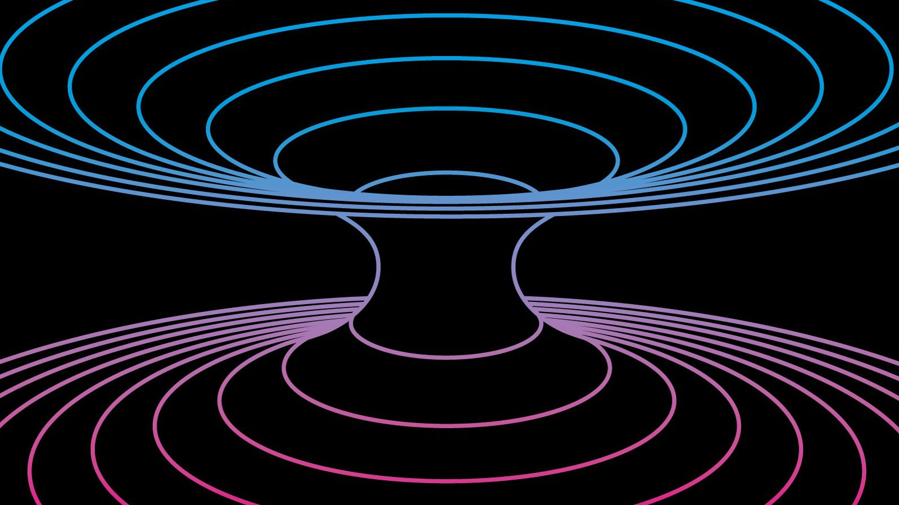

The idea that a well-defined 'now' exists throughout the universe is an illusion, an illegitimate extrapolation of our own experience.

Time is not merely a dimension; it is a riddle that humankind has yet to fully decipher. From the relentless ticking of clocks to the cosmic dance of galaxies, time permeates every corner of existence. Is it a river flowing endlessly forward, or a loop waiting to repeat?
Some believe time is an illusion—a construct of our perception. Others argue it is the very fabric holding the universe together. Whatever the truth may be, time is both a guide and a mystery.
To delve deeper into the knowledge of time, visit this fascinating article.
| Year | Event |
|---|---|
| 1687 | Newton publishes "Principia Mathematica," introducing absolute time. |
| 1905 | Einstein proposes the Special Theory of Relativity. |
| 1927 | Heisenberg formulates the Uncertainty Principle, linking time to quantum mechanics. |
| 2023 | Advancements in quantum computing challenge the nature of time. |